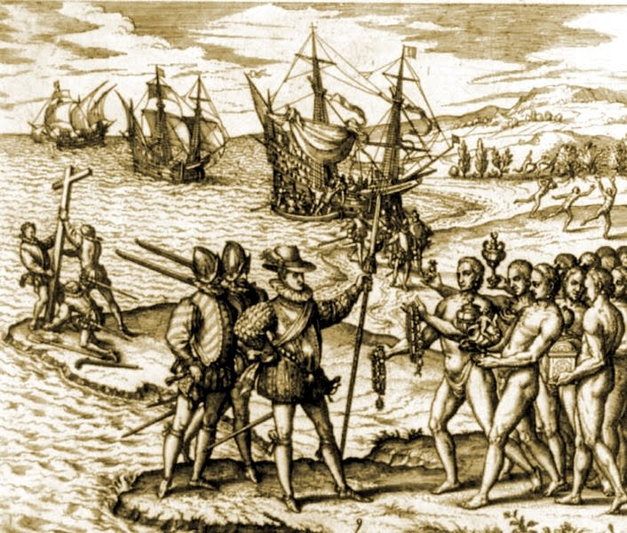
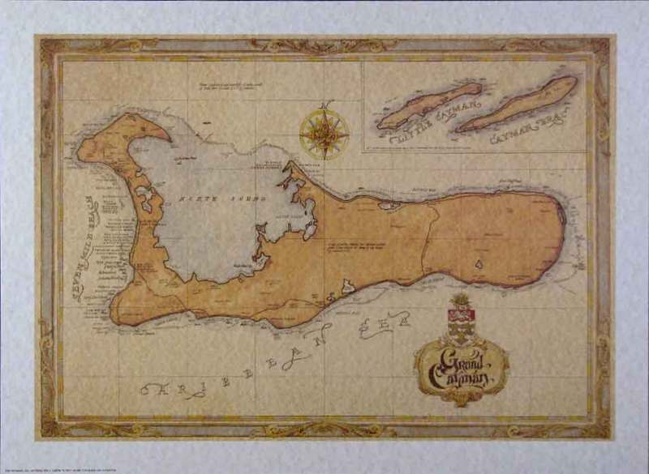
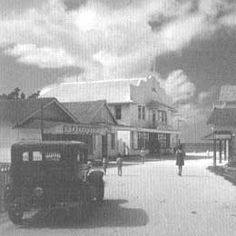
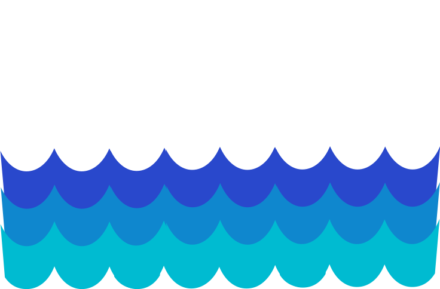
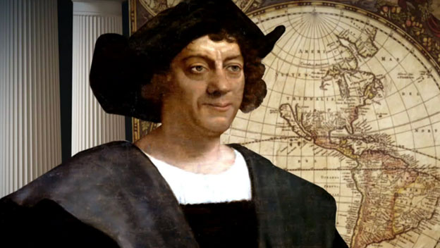
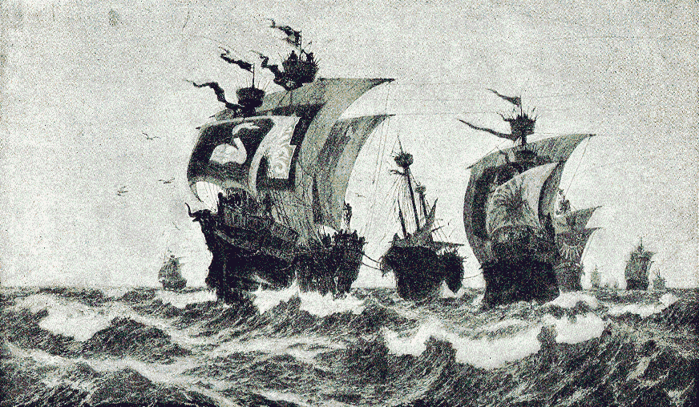
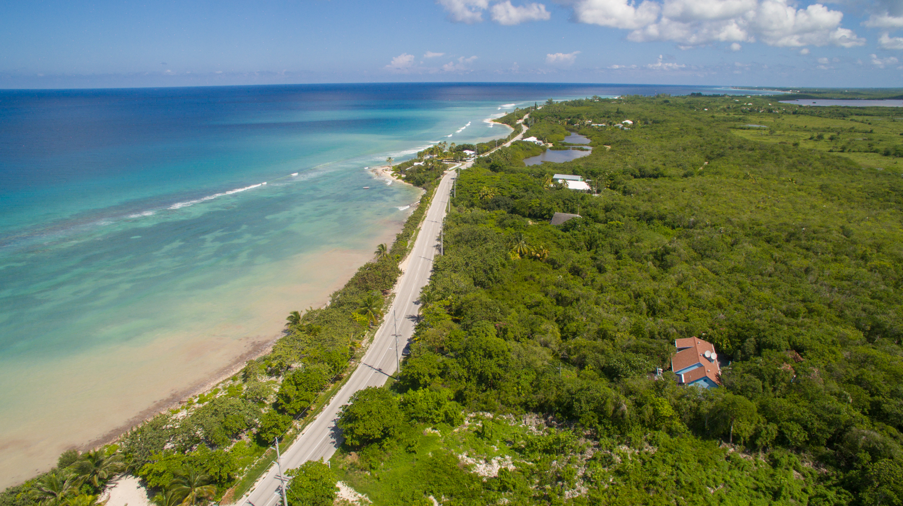

History
The Beginning:
On May 10, 1503 Christopher Columbus sailed along his fourth and final voyage to the New World when a chance wind blew his ship off course. Intending to sail to Hispaniola (present day Haiti and the Dominican Republic), he was thrust westward toward "two very small and low islands, full of tortoises (turtles), as was all the sea all about, insomuch that they looked like little rocks.” He called these islands “Las Tortugas” after the thousands of turtles on shore. The two islands sighted were Cayman Brac and Little Cayman. In 1523, a map was drawn showing all three Islands under the name “Lagartos,” meaning alligators or large lizards. By 1530, the islands were called the “Caimanas”— derived from the Carib Indian word for the marine crocodile that formerly inhabited the islands. “Caimanas” evolved to the Cayman Islands, and we’ve been calling it that ever since.

Sir Francis Drake:
An early English visitor was Sir Francis Drake, who on his voyage in 1585-86 reported seeing "great serpents called Caimanas, like large lizards, which are edible." It was the Islands' ample supply of turtle, however, that made them a popular calling place for ships sailing the Caribbean in need of meat for their crews. This began a trend that eventually drastically depleted our local waters of the turtle, compelling Caymanian fishermen to go further afield to Cuba and the Miskito Cays in search of their catch. The Cayman Islands remained largely uninhabited until the 17th century. The first known settlers arrived in Little Cayman and Cayman Brac around 1658; it is likely these were deserters from Oliver Cromwell’s army in the British colony in Jamaica. Many of the early inhabitants were also Britons from Jamaica. Some early residents were believed to be pirates that settled down looking for a more peaceful life.

Mr. Boddon and Mr. Walter:
The first two settlers were Mr. Bodden or Bowden and Mr. Watler or Walter. Over the course of the next couple of years some other settlers came to join Mr. Bodden and Mr. Watler, and many of these settled on Cayman Brac. Some of the early settlers were fishermen who caught turtle to sell to Jamaican merchants. Isaac Bodden, the first recorded permanent inhabitant of the Cayman Islands, was born on Grand Cayman around 1700. He was the grandson of the original settler named Bodden who was likely one of Oliver Cromwell's soldiers at the taking of Jamaica in 1655. A variety of people settled on the islands: pirates, refugees from the Spanish Inquisition, shipwrecked sailors and slaves. The majority of Caymanians are of African and British descent, with considerable interracial mixing.
